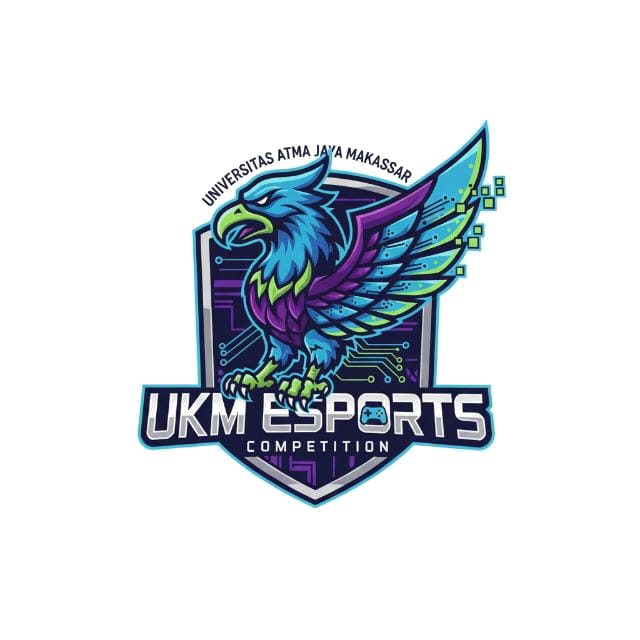
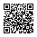
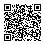

UKM
E-SPORT
Atma Jaya Makassar
SK No. 001/SK/UKM-ESPORT/UAJM/VI/2025
Pendaftaran terbuka
JOIN US
Dulu cuma tim iseng.
Sekarang punya SK.
Giliranmu.
UKM pertama yang lahir dari mahasiswa FTI. Resmi, terstruktur, kompetitif.
01
Turnamen & Kompetisi
Empat gelar terdokumentasi, dari 1v1 Mobile Legends sampai Maung ID Cup Bandung.
02
Pelatihan & Pengembangan
Divisi latihannya berdiri sendiri. Anggota lintas tiga fakultas, delapan judul game.
03
Jaringan Web3
UAJM Blockchain Club bernaung langsung di bawah UKM ini, bukan komunitas terpisah.
UKM E-SPORT
Unit Kegiatan Mahasiswa · Periode 2025/2026

Pindai → formulir pendaftaran
Tanpa kamera, ketik
uajmesport.vercel.app
UAJM BCC
Blockchain Club · divisi Web3 UKM E-Sport

Pindai → grup WhatsApp
Tanpa kamera, ketik
uajmbcc.vercel.app